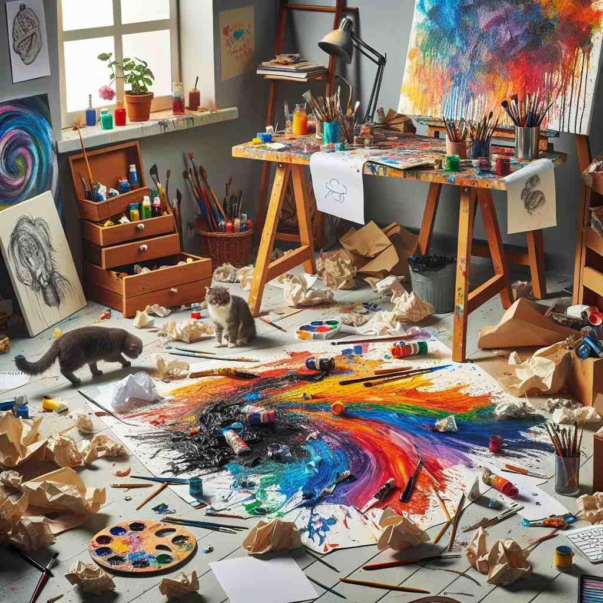

🗝️ v. to mix things in a confused or untidy way
🖼️ 想象一个厨房场景。一个粗心的厨师正在准备沙拉，但不小心把各种食材杂乱无章地混在一起，生菜、番茄、黄瓜堆成一团。他的拌菜动作混乱无序，展现了‘muddle’此时作为‘把东西混在一起’的意思。
🔍 想象一个人在搅拌一堆物品，造成混乱不堪的场景。这个核心意象可以帮助你联想'muddle'的各种用法，无论是混淆思维、搅浑液体，还是调制饮料，都源于这个基本的'混乱'概念。记住这个场景，你就能更容易理解和记忆'muddle'的多重含义。
💬 The chef had to muddle the ingredients quickly to save the dish.
💬 The chef started to muddle the ingredients for his new dish.

💬 The chef started to muddle the ingredients while cooking.

💬 The artist accidentally muddled the paint, creating a colorful mess on the floor.
🔗 ['1. muddy: 泥泞的', '2. muddled: 混乱的', '3. mudslide: 泥石流']
🗝️ v. to confuse or bewilder
🖼️ 在一个数学课堂上，老师正在讲解一个复杂的问题。学生们一个个都露出困惑的表情，他们的笔记本上充满了潦草的笔记。老师意识到他有些讲得太快，他们为这些信息感到‘muddle’。
💬 The complex instructions muddled the students.
❓ 从混乱的物理状态延伸到心理状态
🗝️ v. to think or act in a confused way
🖼️ 在一个重要的商务会议中，一位新员工正在发言，但发现自己忘词了。他慌慌张张地翻看着手中的材料，试图理清自己的思路。显然，他因为紧张而开始‘muddle’，不能清晰地思考。
💬 He muddled through the presentation, forgetting key points.
❓ 描述因混乱而导致的思维或行为状态
🗝️ v. to make or become cloudy or turbid
🖼️ 想象一个怡人的河边场景。一群小孩在水边嬉戏，无意中把河水搅浑。原本清澈见底的水因泥沙而变得浑浊不清，这展示了‘muddle’作为‘使变得浑浊’的意思。
💬 Stirring the sediment muddled the water in the pond.
❓ 将混乱的概念应用于液体
🗝️ n. a state of confusion or disorder
🖼️ 在一个繁忙的地铁站，人群如潮水般涌来，人们互相推搡，匆忙中错过了公告。这一混乱无序的状态，正是‘muddle’作为‘混乱状态’的体现。
💬 The office was in a muddle after the hasty relocation.
❓ 由动词转变为描述混乱状态的名词
🗝️ v. to mix (a drink) with crushed ingredients
🖼️ 在一个热闹的酒吧中，调酒师熟练地在杯中用杵捣碎薄荷叶和青柠，调制一杯清新的莫吉托鸡尾酒。这细致的动作展现了‘muddle’在调酒时的用法。
💬 The bartender muddled the mint leaves for the mojito.
❓ 特指调制饮料时的混合动作